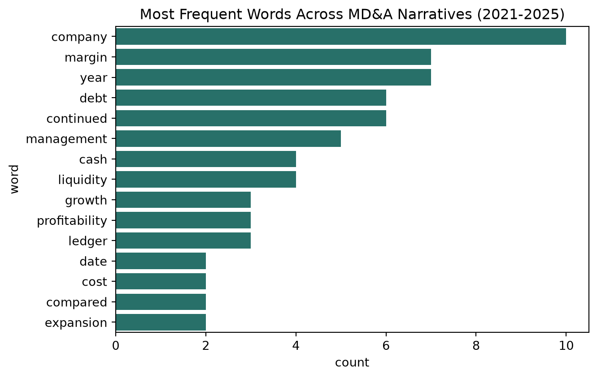
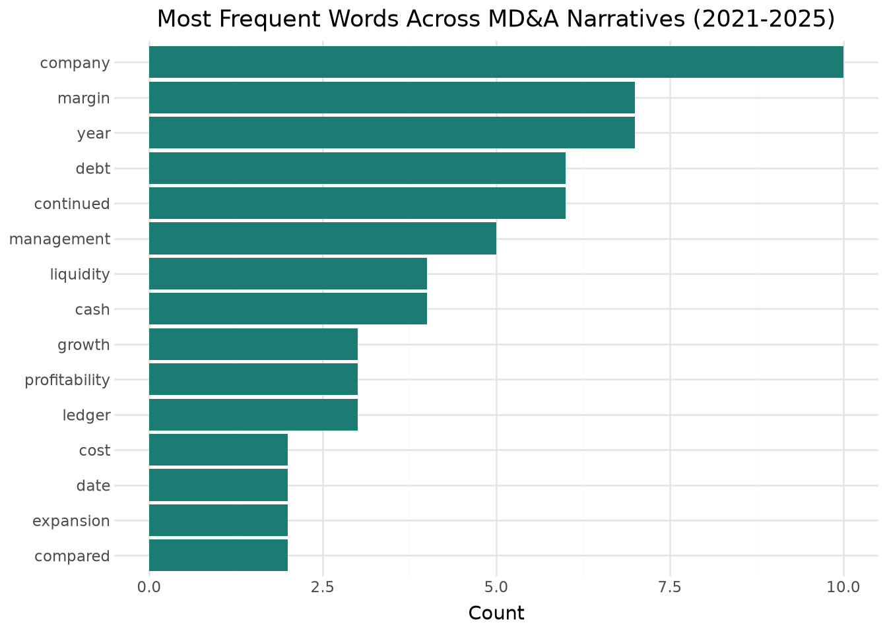
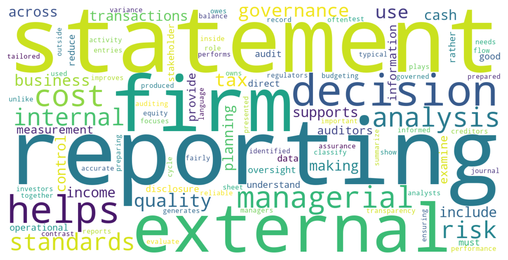
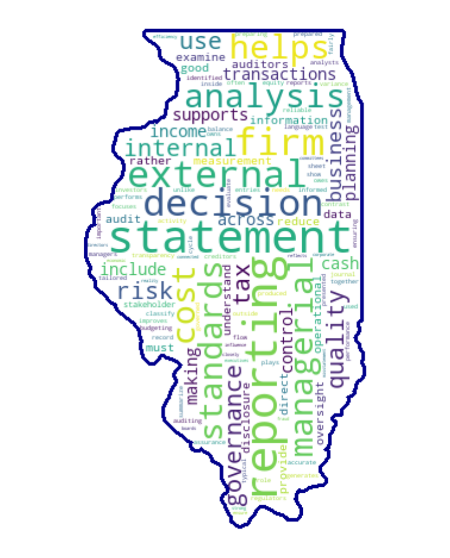

By the end of this chapter, you should be able to:
Explain where unstructured text data shows up in accounting practice, and why it requires different techniques than the numeric, tabular data used throughout this book
Preprocess raw text into an analyzable form: tokenization, stopword removal, and stemming
Convert text into numeric features using bag-of-words and TF-IDF
Apply sentiment analysis to financial narrative text, and explain why general-purpose sentiment tools often misread financial language
Build a text classification model using the same train/test/evaluate workflow from Chapter 13, applied to text instead of numeric ratios
Recognize the specific limitations of classical text analytics techniques in an accounting context
14.1 From Structured to Unstructured Data
Every dataset in this book so far has been structured: rows and columns, numbers and categories, ready to filter, group, and model. A huge and growing share of the data accountants and auditors actually encounter doesn’t look like that at all — it’s unstructured text: the paragraphs in a financial disclosure, the transcript of an earnings call, a free-text description in an audit workpaper, a customer complaint email. This chapter introduces text analytics (often called Natural Language Processing, or NLP) — a set of techniques for turning that unstructured text into something you can analyze quantitatively, using the same underlying workflow (train, test, evaluate) from Chapter 13, applied to text instead of numbers.
TipA Note on Tools for This Chapter
This chapter uses pandas (not polars) alongside scikit-learn, since text vectorization workflows in practice are built almost entirely on pandas + scikit-learn, and polars doesn’t offer a meaningful advantage for the dataset sizes here. Visualizations continue to use both seaborn and plotnine, consistent with the rest of the book.
14.2 Where Text Shows Up in Accounting Practice
A few common sources of text data relevant to accounting and audit work:
MD&A (Management’s Discussion and Analysis) and other financial statement narrative disclosures
Earnings call transcripts, where tone and word choice are studied closely by analysts
Audit workpaper narratives — free-text descriptions of findings, exceptions, and follow-up items
Whistleblower tips and complaint text, often the first signal of a potential issue
Contract and lease language, increasingly relevant for revenue recognition and lease accounting judgments
Vendor and customer correspondence, sometimes reviewed during fraud investigations
14.3 Text Preprocessing Fundamentals
Raw text needs to be broken down and cleaned before it can be analyzed. We’ll work with mda_narratives.csv, a set of short, original MD&A-style paragraphs written for this chapter, one per year (2021-2025), for the same fictional company from Chapter 7 — Ledger & Co. These are not real filings; they’re written to reflect that chapter’s actual computed ratio trends, so we can check whether text-based analysis lines up with what we already know from the numbers.
import pandas as pdimport remda = pd.read_csv("data/mda_narratives.csv")mda[["year", "narrative_text"]]
year
narrative_text
0
2021
Ledger & Co. delivered a solid year of growth,...
1
2022
The company continued to grow revenue and impr...
2
2023
Ledger & Co. achieved another year of strong p...
3
2024
The company again reported improved profitabil...
4
2025
Ledger & Co. delivered its strongest profitabi...
import polars as plimport re mda_pl = pl.read_csv("data/mda_narratives.csv")mda_pl.select(["year", "narrative_text"])
shape: (5, 2)
year
narrative_text
i64
str
2021
"Ledger & Co. delivered a solid…
2022
"The company continued to grow …
2023
"Ledger & Co. achieved another …
2024
"The company again reported imp…
2025
"Ledger & Co. delivered its str…
14.3.1 Tokenization and Cleaning
Tokenization splits text into individual words (tokens). Before that, we typically lowercase everything and remove punctuation, so “Revenue” and “revenue.” are treated as the same word.
def preprocess(text): text = text.lower() text = re.sub(r"[^a-z\s]", "", text) # keep only letters and spacesreturn text.split()tokens = preprocess(mda.loc[0, "narrative_text"])tokens[:10]
stopwords = {"the","a","an","and","or","but","of","in","on","at","to","for","with","as","is","was","were","be","been","this","that","its","it","company","during"}filtered = [t for t in tokens if t notin stopwords]filtered[:10]
import nltk from nltk.corpus import stopwordsnltk.download("stopwords")nltk.download('punkt')stop_words = stopwords.words("english")custom_words = ["&", "co."] # adding some words to stop words list stop_words.extend(custom_words)filtered_pd = [word for word in tokens_pd if word.lower() notin stop_words]filtered_pd[:10]
from nltk.stem import PorterStemmernltk.download("punkt")stemmer_porter = PorterStemmer()stemmed_pd = [stemmer_porter.stem(word) for word in filtered_pd]stemmed_pd[:10]
from nltk.stem import PorterStemmernltk.download("punkt")stemmer_porter = PorterStemmer()stemmed_pl = [stemmer_porter.stem(word) for word in filtered_pl]stemmed_pl[:10]
WarningA Deliberately Simple Stemmer, and Its Limitation
Look closely: “gross” became “gros” — our simple rule stripped a trailing “s” without understanding it wasn’t actually a plural or verb ending. This is a genuine, common failure mode of naive suffix-stripping stemmers, not a bug in this example specifically. Production NLP work typically uses more sophisticated lemmatization instead, which uses a dictionary and grammatical rules to find a word’s true root (“gross” would correctly stay “gross”). We’re using this simplified version purely to show the concept of reducing words to a common form without requiring an external dictionary download — know that real tools handle this more carefully.
14.3.4 Lemmatization
Lemmatization is an advanced text normalization technique in natural language processing (NLP) that reduces words to their meaningful, dictionary-based base form. To achieve high accuracy, a lemmatizer contextualizes the word by determining its part of speech (POS)—such as identifying whether “coding” functions as a noun or a verb in a sentence. This ensures that complex irregular transformations, like mapping the word “better” back to “good” or “was” back to “be,” are resolved correctly based on grammar rules rather than guesswork.
When evaluated side-by-side, lemmatization offers grammatical precision while stemming prioritizes processing speed. Stemming operates by applying crude, heuristic rules to slice off the ends of words, which frequently results in non-existent words or chopped roots like reducing “studies” and “studying” to just “studi.” Conversely, lemmatization relies on deep semantic databases like WordNet to consistently output valid, real-world words like “study.” While stemming is computationally lightweight and ideal for rapid search indexing on massive datasets, lemmatization is far superior for tasks demanding absolute contextual understanding, such as sentiment analysis, chatbots, and machine translation.
import nltkfrom nltk.stem import WordNetLemmatizerlemmatizer = WordNetLemmatizer()lemmatizer_pd = [lemmatizer.lemmatize(word) for word in filtered_pd]lemmatizer_pd[:10]
import nltkfrom nltk.stem import WordNetLemmatizerlemmatizer = WordNetLemmatizer()lemmatizer_pl = [lemmatizer.lemmatize(word) for word in filtered_pl]lemmatizer_pl[:10]
14.4 From Text to Numbers: Bag-of-Words and TF-IDF
Machine learning models need numbers, not words. The bag-of-words approach counts how often each word appears in each document, ignoring word order entirely.
Notice “cash” appears zero times in 2021-2022 but grows to 2 mentions by 2025 — consistent with Chapter 7’s finding that the company’s cash position grew substantially over this period.
TF-IDF (Term Frequency-Inverse Document Frequency) improves on simple counts by downweighting words that appear in every document (and are therefore less distinctive) and upweighting words that are frequent in one document but rare across the rest.
“Margin” and “debt” both carry noticeably higher TF-IDF weight in 2025 than in earlier years — reflecting that year’s narrative repeatedly emphasizing margin improvement and debt reduction, exactly the two trends Chapter 7 identified as most significant.
14.5 Visualizing Word Frequency
Visualizing word frequency helps turn raw text into a quick, intuitive summary of the most common terms. It makes it easier to spot key themes, repeated concepts, and dominant topics in documents, survey responses, or research text.
Common ways to visualize word frequency include bar charts, word clouds, and frequency tables. A bar chart is usually better for precise comparison, while a word cloud is more visually appealing for highlighting prominent words at a glance.
import seaborn as snsimport matplotlib.pyplot as pltcount_vec_top = CountVectorizer(stop_words="english", max_features=15)count_matrix_top = count_vec_top.fit_transform(mda["narrative_text"])word_freq = pd.DataFrame({"word": count_vec_top.get_feature_names_out(),"count": count_matrix_top.toarray().sum(axis=0),}).sort_values("count", ascending=False)plt.figure(figsize=(7, 4.5))sns.barplot(data=word_freq, x="count", y="word", color="#1c7c73")plt.title("Most Frequent Words Across MD&A Narratives (2021-2025)")plt.tight_layout()plt.show()

from plotnine import*( ggplot(word_freq, aes(x="reorder(word, count)", y="count"))+ geom_col(fill="#1c7c73")+ coord_flip()+ labs(title="Most Frequent Words Across MD&A Narratives (2021-2025)", x="", y="Count")+ theme_minimal())

A word cloud is a text visualization where more frequent words appear larger. It is often used to quickly spot the dominant terms in a document, survey responses, or a corpus.
import refrom collections import Counterfrom wordcloud import WordCloud, STOPWORDSimport matplotlib.pyplot as plttext ="""Accounting is the language of business, and it helps organizations record, classify, and summarize financial activity. In a typical accounting cycle, transactions are identified, journal entries are prepared, and reports are produced for managers and outside users. Accurate accounting supports informed decisions and improves transparency across the firm.Financial accounting focuses on preparing financial statements for external stakeholders such as investors, creditors, regulators, and analysts. These statements include the balance sheet, income statement, cash flow statement, and statement of equity. Together, they show how a company performs, what it owns, what it owes, and how it generates cash.Managerial accounting is used inside the organization for planning, control, and decision-making. It often includes budgeting, cost analysis, variance analysis, and performance measurement. Unlike financial accounting, managerial accounting is not governed by the same external reporting standards and can be tailored to internal needs.Auditing plays an important role in ensuring that accounting information is reliable and fairly presented. External auditors examine financial statements and test internal controls to provide assurance to users. Internal auditors, by contrast, evaluate risk management, governance, and operational efficiency.Corporate governance is closely connected to accounting because strong oversight reduces the risk of fraud and misstatement. Boards of directors, audit committees, and executives all influence the quality of reporting. Good governance helps ensure that financial reporting reflects economic reality rather than managerial manipulation.The use of technology in accounting has grown rapidly through enterprise systems, data analytics, and artificial intelligence. Automated tools can process invoices, detect anomalies, and flag unusual transactions. At the same time, professionals must understand the limitations of algorithms and maintain ethical oversight.Accounting standards provide consistency and comparability across firms and industries. In the United States, many public companies follow GAAP, while firms in other jurisdictions may use IFRS. Standards guide recognition, measurement, presentation, and disclosure decisions in financial reporting.Tax accounting differs from financial accounting because it is concerned with compliance and tax law rather than external reporting alone. Firms must track deductible expenses, taxable income, credits, and timing differences. Effective tax planning can reduce costs while remaining within legal requirements.Cost accounting helps organizations understand how resources are consumed in producing goods and services. It assigns direct materials, direct labor, and overhead to products, departments, or projects. This information supports pricing, profitability analysis, and operational improvement.Modern accounting research examines topics such as earnings quality, audit quality, disclosure, ESG reporting, and the effects of AI on decision-making. Researchers use archival data, experiments, and advanced statistical methods to study these issues. As business environments evolve, accounting continues to adapt to new risks, technologies, and stakeholder expectations."""# Clean texttext = text.lower()text = re.sub(r"[^a-z\s]", " ", text)# Remove stopwordsstopwords =set(STOPWORDS)stopwords.update({"accounting", "financial", "company", "companies","organization", "organizations"#, "reporting", "statement","statements" , "users"})clean_text =" ".join(word for word in text.split() if word notin stopwords)# Generate word cloudwc = WordCloud( width=1200, height=600, background_color="white", stopwords=stopwords, collocations=False, max_words=100).generate(clean_text)# Displayplt.figure(figsize=(8, 4))plt.imshow(wc, interpolation="bilinear")plt.axis("off")plt.tight_layout()plt.show()

You can also provide different shapes to your word cloud. We generate a word cloud of the state of Illinois shape.
import matplotlib.pyplot as pltfrom wordcloud import WordCloud, STOPWORDSimport numpy as npfrom PIL import Imageimport re# Load your Illinois shape imageimg = Image.open("images/illinois.png").convert("L") # grayscalemask = np.array(img)# Generate word cloud in Illinois shapewc = WordCloud( background_color="white", mask=mask, stopwords=stopwords, contour_width=2, contour_color="darkblue", collocations=False).generate(text)# Show itplt.figure(figsize=(10, 5))plt.imshow(wc, interpolation="bilinear")plt.axis("off")plt.tight_layout()plt.show()

14.6 Financial Sentiment Analysis
Sentiment analysis scores text as positive, negative, or neutral, typically using a lexicon: a list of words tagged with a sentiment polarity. This is where financial text creates a genuine, well-documented problem: general-purpose sentiment lexicons are usually built from product reviews or social media, where words like “liability,” “tax,” “cost,” and “debt” are treated as negative — but in ordinary financial narrative, these are often just neutral accounting terms, not expressions of bad news.
# An illustrative generic-style lexicon (not a real published tool)generic_positive = {"strong","solid","growth","improved","improve","optimistic","pleased","positive","opportunity","gains","growing","grow","expansion","expand"}generic_negative = {"debt","decline","declined","liability","liabilities","risk","cost","costs","cautious","pressure","pressures","tax","expense","expenses","loss","losses"}# A finance-adjusted version: the same list, with neutral accounting/finance# terms removed from the negative set, since they aren't inherently negative in this contextfinance_adjusted_negative = generic_negative - {"debt", "liability", "liabilities", "tax", "expense", "expenses", "cost", "costs"}def score_sentiment(text, positive_words, negative_words): text = text.lower() tokens = re.sub(r"[^a-z\s]", "", text).split() pos_count =sum(1for t in tokens if t in positive_words) neg_count =sum(1for t in tokens if t in negative_words) total = pos_count + neg_countreturn0.0if total ==0else (pos_count - neg_count) / totalmda["Generic Lexicon"] = mda["narrative_text"].apply(lambda t: score_sentiment(t, generic_positive, generic_negative))mda["Finance-Adjusted Lexicon"] = mda["narrative_text"].apply(lambda t: score_sentiment(t, generic_positive, finance_adjusted_negative))mda[["year", "Generic Lexicon", "Finance-Adjusted Lexicon"]].round(3)
year
Generic Lexicon
Finance-Adjusted Lexicon
0
2021
0.000
0.500
1
2022
0.111
0.667
2
2023
0.200
0.500
3
2024
0.333
0.600
4
2025
0.000
1.000
ImportantA Striking, Real Result From This Exact Data
Look at 2025 — the year Chapter 7 identified as the company’s strongest year across every profitability and leverage metric. The generic lexicon scores it as perfectly neutral (0.000), entirely because the word “debt” appears twice (in the context of paying it down, a genuinely positive development). The finance-adjusted lexicon correctly scores 2025 as the most positive year in the entire series (1.000). This is not a contrived example — it’s exactly what happens when a sentiment tool built for product reviews is applied unmodified to financial narrative. This is precisely why specialized financial sentiment dictionaries (the best-known being the academic Loughran-McDonald word lists, which you’re encouraged to look up and explore further) exist as a distinct tool from general-purpose sentiment analysis.
The finance-adjusted line trends upward, consistent with the company’s actual improving fundamentals; the generic line is noisy and even dips in the company’s best year — a clear illustration of why lexicon choice matters enormously in financial text analysis.
14.7 Text Classification
Beyond sentiment, a common accounting task is classifying text into categories — for example, sorting audit finding descriptions into issue types to prioritize review. This uses exactly the same train/test/evaluate workflow as Chapter 13’s financial distress classifier, with TF-IDF features standing in for financial ratios.
# classify a brand-new, unseen finding descriptionnew_finding = ["The journal entry was approved by someone without proper sign-off authority."]new_vec = vectorizer.transform(new_finding)clf.predict(new_vec)
array(['Authorization/Access'], dtype=object)
WarningWhy Is Accuracy a Perfect 100%? (And Why That’s a Red Flag Here, Not a Success)
Unlike Chapter 13’s financial distress model (which topped out around 88% accuracy on real-feeling data), this model classifies with perfect accuracy. That’s not because text classification is inherently easier than numeric classification — it’s because this chapter’s finding descriptions were generated from a small number of category-specific templates, giving each category cleanly distinctive vocabulary (“duplicate,” “authorization,” “shipment,” “supporting documentation”) that a model can separate perfectly. Real audit findings are almost never this clean: the same finding might involve both a timing issue and a documentation gap, phrasing varies enormously between different auditors, and vocabulary overlaps heavily between categories. Treat this chapter’s 100% accuracy as a property of intentionally clean training data, not as a realistic expectation for a production text classifier — a good habit is to be more suspicious of a perfect score, not more confident, since it often signals a data leakage or over-simplification problem rather than genuine model quality.
14.8 Limits and Risks of Text Analytics in Accounting
The classical techniques in this chapter — bag-of-words, TF-IDF, lexicon-based sentiment, and TF-IDF-based classification — are useful but genuinely limited in ways worth naming directly:
No understanding of context. “The company is not at risk of default” and “the company is at risk of default” share almost identical bag-of-words representations despite opposite meanings — negation is invisible to these techniques.
No handling of sarcasm or subtlety. A skeptical or hedging tone (“management remains cautiously optimistic, though several risks remain unresolved”) is easily miscounted as simply positive by a lexicon that only tallies individual words.
Boilerplate dilutes signal. Real financial disclosures contain large amounts of standardized legal and risk-factor boilerplate repeated across companies and years, which can drown out the specific, meaningful language analysts actually care about.
Category and vocabulary overlap. As the audit finding classifier’s suspiciously perfect accuracy illustrates, real-world text rarely separates as cleanly as engineered examples do.
TipLooking Ahead
Every one of these limitations is exactly where large language models — the subject of the next chapter — represent a genuine leap forward: they capture context, negation, and tone in ways bag-of-words and lexicon counting fundamentally cannot. Understanding why these classical techniques struggle is what makes it possible to appreciate specifically what’s new and different about the GenAI-based approaches in Chapter 15, rather than treating “AI” as one undifferentiated technology.
14.9 Chapter Summary
Text analytics (NLP) extends this book’s analytical toolkit from structured, numeric data to unstructured text — MD&A disclosures, earnings call transcripts, audit narratives, and more.
Preprocessing (tokenization, stopword removal, stemming) turns raw text into a cleaned, analyzable form, though simple stemming rules can produce their own errors, as this chapter’s “gross” → “gros” example showed directly.
Bag-of-words and TF-IDF convert text into numeric features usable by any machine learning model, with TF-IDF specifically upweighting distinctive, less common terms.
General-purpose sentiment lexicons systematically misread financial text, since ordinary accounting terms like “debt,” “tax,” and “liability” get miscounted as negative — this chapter’s own data showed a generic lexicon scoring the company’s best year as perfectly neutral.
Text classification follows the identical train/test/evaluate workflow from Chapter 13, just with TF-IDF features instead of financial ratios — and a suspiciously perfect accuracy score is a reason for more scrutiny, not less.
Classical NLP techniques can’t handle negation, sarcasm, tone, or boilerplate dilution — exactly the gap that large language models, covered next, are designed to close.
14.10 Discussion Questions
Why did the generic sentiment lexicon score 2025 — the company’s strongest year by every financial metric in Chapter 7 — as perfectly neutral? What does this suggest about applying general-purpose NLP tools to financial text without adaptation?
The audit finding classifier achieved 100% accuracy. Why should that result make you more skeptical of the model, not more confident, and what would you want to test before trusting it on new, real findings?
Give an example sentence (financial or otherwise) where bag-of-words would completely miss the actual meaning due to negation or sarcasm.
14.11 Exercises
Add three new words to both the generic and finance-adjusted negative lexicons (e.g., “depreciation,” “obligation,” “amortization”) and recompute the sentiment scores. Does the gap between the two lexicons widen or narrow?
Using audit_findings_labeled.csv, write five new finding descriptions in your own words for any one category, deliberately making the vocabulary overlap more with a different category than templates in this chapter did. Add them to the dataset and see whether the classifier’s accuracy drops.
Rebuild the word frequency chart using only 2021 and 2025’s narratives separately (rather than combined). How does the most frequent vocabulary differ between the company’s weakest and strongest years?
Using simple_stem() from this chapter, find at least two other words from the MD&A narratives (besides “gross”) where the naive stemming rule produces an incorrect or confusing result, and explain why.